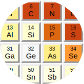

CIF Parser¶
This section covers working with CIF files on a syntactic level.
Higher-level functions that understand semantics of:
small molecule or inorganic CIF files,
macromolecular PDBx/mmCIF,
and monomer/ligand cif files as used for macromolecular restraints
are documented in section Molecular models.
What are STAR, CIF, DDL, mmCIF?¶
(in case someone comes here when looking for a serialization format)
STAR is a human-readable data serialization format (think XML or JSON) that happens to be known and used only in molecular-structure sciences.
CIF (Crystallographic Information File) – a file format used in crystallography – is a restricted derivative of STAR. It is restricted in features (to make implementation easier), but also imposes arbitrary limits – for example on the line length.
DDL is a schema language for STAR/CIF.
All of them (STAR, CIF and DDL) have multiple versions. We will be more specific in the following sections.
The STAR/CIF syntax is relatively simple, but may be confusing at first. (Note that the initial version of STAR was published by Sydney Hall in 1991 – before XML and long before JSON and YAML, not to mention TOML).
Key-value pairs have the form:
_year 2017 # means year = 2017
Blocks (sections) begin with the data_ keyword
with a block name glued to it:
data_tomato # [tomato]
_color red # color = "red"
Importantly, unlike XML/JSON/YAML/TOML, STAR is designed to concisely represent tabular data. This example from TOML docs:
# TOML
points = [ { x = 1, y = 2, z = 3 },
{ x = 7, y = 8, z = 9 },
{ x = 2, y = 4, z = 8 } ]
could be expressed as a so-called loop in STAR (keyword loop_
followed by column names followed by values):
# STAR/CIF
loop_
_points.x _points.y _points.z
1 2 3
7 8 9
2 4 8
Typically, long tables (loops) make most of the CIF content:
1 N N . LEU A 11 ? 0.5281 0.5618 0.5305 -0.0327 -0.0621 0.0104
2 C CA . LEU A 11 ? 0.5446 0.5722 0.5396 -0.0317 -0.0632 0.0080
# many, many lines...
5331 S SD . MET C 238 ? 2.2952 2.3511 2.3275 -0.0895 0.0372 -0.0230
5332 C CE . MET C 238 ? 1.5699 1.6247 1.6108 -0.0907 0.0388 -0.0244
The dot and question mark in the example above are two null types.
In the CIF spec: ? = unknown and . = not applicable.
In mmCIF files . is used for mandatory items, ? for not mandatory.
The CIF syntax has a serious flaw resulting from historical trade-offs:
a string that can be interpreted as a number does not need to be quoted.
Therefore, the type of 5332 above is not certain:
the JSON equivalent can be either 5332 or "5332".
Note: “STAR File” is trademarked by IUCr, and it used to be patented.
The mmCIF format (by mmCIF we mean what is more formally called PDBx/mmCIF) is the CIF syntax + a huge dictionary (ontology/schema) in DDL2. The dictionary defines relations between columns in different tables, which makes it resemble a relational database (it was designed at the height of popularity of RDBMSs).
Where are the specs?
International Tables for Crystallography Vol. G (2006) describes all of the STAR, CIF 1.1, DDL1 and DDL2. If you don’t have access to it – IUCr website has specs of CIF1.1 and DDLs. As far as I can tell all versions of the STAR spec are behind paywalls.
Later versions of the formats (hardly used as of 2017) are described in these articles: STAR (2012), DDLm and dREL (2012), and CIF 2.0 (2016). Only the last one is freely available.
PDBx/mmCIF is documented at mmcif.pdb.org.
What is parsed?¶
The parser supports CIF 1.1 spec and some extras.
Currently, it is available as:
C++11 header-only library, and
Python (2 and 3) extension module.
We use it to read:
mmCIF files (both coordinates and structure factors)
CIF files from Crystallography Open Database (COD)
Chemical Component Dictionary from PDB
DDL1 and DDL2 dictionaries from IUCr and PDB
monomer library a.k.a. Refmac dictionary
The parser handles:
all constructs of CIF 1.1 (including save frames),
the
global_andstop_keywords from STAR – needed for Refmac monomer library andmmcif_nmr-star.dic, respectively.
It could be extended to handle also the new features of CIF 2.0 or even the full STAR format, but we don’t have a good reason to do this. The same goes for DDLm/dREL.
The parser does not handle CIF 1.1 conventions, as they are not part
of the syntax:
line wrapping (eol;\eol),
Greek letters (\m -> µ),
accented letters (\'o -> ó),
special alphabetic characters (\%A -> Å)
and other codes (\\infty -> ∞).
CIF parsers in the small-molecules field need to deal with incorrect syntax. The papers about iotbx.cif and COD::CIF::Parser enumerate 12 and 10 common error categories, respectively. Nowadays the problem is less severe, especially in the MX community that embraced the CIF format later. So we’ve decided to add only the following rules to relax the syntax:
names and lines can have any length like in STAR (the CIF spec imposes the limit of 2048 characters, but some mmCIF files from PDB exceed it, e.g. 3j3q.cif),
quoted strings may contain non-ascii characters (if nothing has changed one entry in the PDB has byte A0 corresponding to non-breaking space),
a table (loop) can have no values if it is followed by another loop or block end (because Refmac monomer library),
block name (blockcode) can be empty, i.e. the block can start with bare
data_keyword (RELION writes such files),unquoted strings cannot start with keywords (STAR spec is ambiguous about this – see StarTools doc for details; this rule is actually about simplifying not relaxing),
missing value in a key-value pair is optionally allowed if whitespace after the tag ends with a new-line character. More specifically, the parsing step allows for missing value in such case, but the next validation step (which can be skipped when using using low-level functions, such as
parse_file()) throws an error.
Getting started¶
C++¶
CIF parser is implemented in header files,
so you do not need to compile Gemmi.
It has a single dependency: PEGTL (also header-only),
which is included under the include/gemmi/third_party directory.
All you need is to make sure that Gemmi headers are in your
project’s include path, and compile your program as C++11 or later.
Let us start with a simple example. This little program reads mmCIF file and shows weights of the chemical components:
#include <iostream>
#include <gemmi/cif.hpp>
namespace cif = gemmi::cif;
int main() {
cif::Document doc = cif::read_file("1mru.cif");
for (cif::Block& block : doc.blocks)
for (auto cc : block.find("_chem_comp.", {"id", "formula_weight"}))
std::cout << cc[0] << " weights " << cc[1] << std::endl;
}
To compile it on Unix system you need to fetch Gemmi source code and run a compiler:
git clone https://github.com/project-gemmi/gemmi.git
c++ -std=c++11 -Igemmi/include -O2 my_program.cpp
Python¶
Python module for Python 2.7 and 3.x
can be installed with pip, as described in the
Installation section.
After installation pydoc gemmi.cif should list all classes and methods.
To start with a simple example, here is a program that says hello to each element found in mmCIF:
import sys
from gemmi import cif
greeted = set()
for path in sys.argv[1:]:
try:
doc = cif.read_file(path) # copy all the data from mmCIF file
block = doc.sole_block() # mmCIF has exactly one block
for element in block.find_loop("_atom_site.type_symbol"):
if element not in greeted:
print("Hello " + element)
greeted.add(element)
except Exception as e:
print("Oops. %s" % e)
sys.exit(1)
More complex examples are shown in the Examples section.
Internally, Python bindings use pybind11.
DOM and SAX¶
The terms DOM and SAX originate from XML parsing, but they became also names of general parsing styles. Gemmi can parse CIF files in two ways that correspond to DOM and SAX:
The usual way is to parse a file or a string into a document (DOM) that can be easily accessed and manipulated.
Alternatively, from C++ only, one can define own PEGTL Actions for to the grammar rules from
cif.hpp. These actions will be triggered while reading a CIF file.
This documention covers the DOM parsing only. The hierarchy in the DOM reflects the structure of CIF 1.1:
Document contains blocks.
Block can contain name-value pairs, loops and frames.
Frame can contain name-value pairs and loops.
Loop (m×n table) contains n column names and m×n values.
Names are often called tags. The leading _ is usually treated
as part of the tag, not just a syntactic feature. So we store tag string
with the underscore (_my_tag), and function that take tags as arguments
expect strings starting with _.
The case of tags is preserved.
Values have types. CIF 1.1 defines four base types:
char (string)
uchar (ughh.. case-insensitive string)
numb (number that cannot be recognized as number on the syntax level)
null (one of two possible nulls:
?and.)
Additionally, DDL2 dictionaries specify subtypes.
For example, int and float are mmCIF subtypes of numb.
Since in general it is not possible to infer type without the corresponding dictionary, the DOM stores raw strings (including quotes). They can be later converted to required type using the following helper functions:
as_string()– gets unquoted string,as_number()– gets floating-point number,as_int()– gets integer,as_char()– gets single character,is_null()– check if the value is null (i.e.?or.),
and we have also
quote()– the opposite ofas_string()– add quotes appropriate for the content of the string (usually, no quotes are necessary and no quotes are added).
C++¶
All these helper functions are defined in gemmi/cifdoc.hpp
except for as_number() which is in gemmi/numb.hpp.
They take a string as an argument and work as expected, for example:
double rfree = cif::as_number(raw_rfree_string); // NaN if it's '?' or '.'
Python¶
>>> from gemmi import cif
>>> cif.as_number('123')
123.0
>>> cif.as_int('123')
123
>>> cif.quote('two words')
"'two words'"
>>> cif.as_string(_)
'two words'
>>> cif.as_number(_)
nan
Reading a file¶
We have a few reading functions that read a file (or a string, or a stream)
and return a document (DOM) – an instance of class Document.
C++¶
The reading functions are in the gemmi::cif namespace:
Document read_file(const std::string& filename)
Document read_memory(const char* data, const size_t size, const char* name)
Document read_cstream(std::FILE *f, size_t bufsize, const char* name)
Document read_istream(std::istream &is, size_t bufsize, const char* name)
Parameter name is used only when reporting errors.
Parameter bufsize determines the buffer size and only affects performance.
Regardless of the buffer size, the last two options are slower
than read_file() – they were not optimized for.
Additional header <gemmi/gz.hpp> is needed to transparently open
a gzipped file (by uncompressing it first into a memory buffer)
if the filename ends with .gz:
// in this and all the next examples: namespace cif = gemmi::cif;
cif::Document doc = cif::read(gemmi::MaybeGzipped(path));
If you use it, you must also link the program with zlib. On Unix systems
it usually means adding -lz to the compiler invocation.
And if the path above is -, the standard input is read.
Python¶
from gemmi import cif
# read and parse a CIF file
doc = cif.read_file('components.cif')
# the same, but if the filename ends with .gz it is uncompressed on the fly
doc = cif.read('../tests/1pfe.cif.gz')
# read content of a CIF file from string
doc = cif.read_string('data_this _is valid _cif content')
Low-level functions¶
The read_file() call is equivalent to the following sequence:
path = 'components.cif'
doc = cif.Document()
doc.source = path
doc.parse_file(path)
doc.check_for_missing_values()
doc.check_for_duplicates()
The last two functions check for, respectively, missing values in tag-value pairs and duplicated names. It is possible to read erroneous CIF files by skipping these checks.
Analogically, function read_string() can be replaced by a similar
sequence with Document.parse_string() doing the main job:
>>> doc = cif.Document()
>>> doc.parse_string('data_this _tag_has_no_value\n')
>>> doc[0].find_value('_tag_has_no_value')
''
>>> try: doc.check_for_missing_values()
... except RuntimeError: print('missing value')
...
missing value
Writing a file¶
Reading and writing a file does not preserve whitespaces. Instead, we have a few choices for “styling” of the output:
Style::Simplewrites out the DOM structure adding blank lines between mmCIF categories,Style::NoBlankLinesdoes not add blank lines,Style::PreferPairswrites single-row loops as pairs,Style::Pdbxadditionally puts#(empty comments) between categories, mimicking the peculiar formatting of PDBx/mmCIF files in the official wwPDB archive. It enables diff-ing original and modified files with option--ignore-space-change.Style::Indent35writes values from pairs from 35th column,
C++¶
The functions writing cif::Document to C++ stream
is in a separate header gemmi/to_cif.hpp:
void write_cif_to_stream(std::ostream& os, const Document& doc, Style style)
Python¶
In Python, the function that writes the document to a file is a method
of the Document class:
>>> doc.write_file('1pfe-modified.cif')
It can take the style as optional, second argument:
>>> doc.write_file('1pfe-modified.cif', cif.Style.PreferPairs)
>>> doc.write_file('1pfe-styled.cif', cif.Style.Pdbx)
The Document class also has a method as_string() which returns
the text that would be written by write_file().
Document¶
Document is made of blocks with data. The blocks can be iterated over,
accessed by index or by name (each CIF block must have a unique name).
As it is common for cif files to contain only a single block,
gemmi has a method sole_block() that returns the first block
if the document has only one block; otherwise it throws an exception.
At last, is also has a member variable source that contains
the path of the file from which the document was read (if it was read
from a file).
C++¶
Document has the two member variables:
std::string source; // filename or the name passed to read_memory()
std::vector<Block> blocks;
Each Block corresponds to a data block.
To access a block with known name use:
Block* Document::find_block(const std::string& name)
To access the only block in the file you may use:
Block& Document::sole_block()
A new Document instance can be created with default constructor.
To modify a document you need to access directly its member variables.
With one exception: when adding new blocks you can use a function that
additionally checks if the new name is unique:
Block& Document::add_new_block(const std::string& name, int pos=-1)
Python¶
Document can be iterated, accessed by block index and by block name:
>>> doc = cif.read_file("components.cif")
>>> len(doc)
25219
>>> doc[0]
<gemmi.cif.Block 000>
>>> doc[-1]
<gemmi.cif.Block ZZZ>
>>> doc['MSE']
<gemmi.cif.Block MSE>
It has two other ways of accessing a block:
>>> # The function block.find_block(name) is like block[name] ...
>>> doc.find_block('MSE')
<gemmi.cif.Block MSE>
>>> # ... except when the block is not found:
>>> doc.find_block('no such thing') # -> None
>>> # doc['no such thing'] # -> KeyError
>>> # Get the only block; throws exception if the document has more blocks.
>>> cif.read("../tests/1pfe.cif.gz").sole_block()
<gemmi.cif.Block 1PFE>
Blocks can be inserted (by default – appended after existing blocks) using one of the two functions:
Document.add_new_block(name, pos=-1)Document.add_copied_block(block, pos=-1)
As an example, here is how to start a new document:
>>> d = cif.Document()
>>> block_one = d.add_new_block('block-one')
>>> # populate block_one
To delete a block use Document.__delitem__ (for example: del doc[1]).
Document has also one property
>>> doc.source
'components.cif'
Block¶
Each block has a name and a list of items. Each item is one of:
name-value pair (Pair),
table, a.k.a loop (Loop)
or save frame (Block – the same data structure as for block).
C++¶
Each block contains:
std::string name;
std::vector<Item> items;
where Item is implemented as an unrestricted (C++11) union
that holds one of Pair, Loop or Block.
Python¶
Each block has a name:
>>> doc = cif.read("../tests/1pfe.cif.gz")
>>> block = doc.sole_block()
>>> block.name
'1PFE'
and a list of items (class Item):
>>> for item in block:
... if item.line_number > 1670:
... if item.pair is not None:
... print('pair', item.pair)
... elif item.loop is not None:
... print('loop', item.loop)
... elif item.frame is not None:
... print('frame', item.frame)
...
pair ['_ndb_struct_conf_na.entry_id', '1PFE']
pair ['_ndb_struct_conf_na.feature', "'double helix'"]
loop <gemmi.cif.Loop 8 x 25>
loop <gemmi.cif.Loop 5 x 43>
loop <gemmi.cif.Loop 3 x 3>
loop <gemmi.cif.Loop 83 x 10>
Frame¶
(Very few people need it, skip this section.)
The named save frames (keyword save_) from the STAR specification
are used in CIF files only as sub-sections of a block.
The only place where they are enountered are mmCIF dictionaries.
The save-frame is stored as Block and can be accessed with:
Block* Block::find_frame(std::string name)
>>> frame = block.find_frame('my_frame')
Additionally, in C++ one may iterate over all Block’s items, check each item type and handle all the save frames:
for (cif::Item& item : block.items)
if (item.type == cif::ItemType::Frame)
// doing something with item.frame which is a (nested) Block
cif::Block& frame = item.frame;
Pairs and Loops¶
The functions in this section can be considered low-level, because they are specific to either name-value pairs or to loops.
Warning
Assuming what is a pair and what is in loop is a common source of bugs when handling mmCIF files, so instead of these functions we recommend using abstractions introduced in the next sections. For example, when working with proteins one could assume that anisotropic ADP values are in a loop, but wwPDB has entries with anisotropic ADP for one atom only – as name-value pairs. On the other hand, one could think that R-free is always given as name-value, but in entries from joint X-ray and neutron refinement it is in a loop. Be careful.
The next sections introduce function that work with both pairs and loops.
C++¶
Pair is simply defined as:
using Pair = std::array<std::string, 2>;
A pair with a particular tag can be located using:
const Pair* Block::find_pair(const std::string& tag) const
or, if you want just the value:
const std::string* Block::find_value(const std::string& tag) const
Both functions return nullptr if the tag is not found (and they
do not search in CIF loops).
To add a pair to the block, or modify an existing one, use:
void Block::set_pair(const std::string& tag, std::string value)
The value needs quoting, the passed argument needs to be already quoted
(you may pass cif::quote(value)).
Loop is defined as:
struct Loop {
std::vector<std::string> tags;
std::vector<std::string> values;
// and a number of functions
};
To get values corresponding to a tag in a loop (table) you may use:
Column Block::find_loop(const std::string& tag)
struct Column, which is documented further on, has method get_loop()
which gives access to struct Loop.
A new loop can be added using function:
Loop& Block::init_loop(const std::string& prefix, std::vector<std::string> tags)
Then it can be populated by either setting directly tags and values,
or my using Loop’s methods such as add_row() or set_all_values().
Python¶
Accessing name-value pairs:
>>> # (1) tag and value
>>> block.find_pair('_cell.length_a')
['_cell.length_a', '39.374']
>>> block.find_pair('_no_such_tag') # return None
>>> # (2) only value
>>> block.find_value('_cell.length_b')
'39.374'
>>> block.find_value('_cell.no_such_tag') # returns None
>>> # (3) Item
>>> item = block.find_pair_item('_cell.length_c')
>>> item.pair
['_cell.length_c', '79.734']
>>> item.line_number
72
>>> block.find_pair_item('_nothing') # return None
To add a name-value pair, replacing current item if it exists,
use function set_pair:
>>> block.set_pair('_year', '2030')
If the value needs quoting, it must be passed quoted:
>>> block.set_pair('_title', cif.quote('Goldilocks and the Three Bears'))
Now we can create a CIF file can from scratch:
>>> d = cif.Document()
>>> d.add_new_block('oak')
<gemmi.cif.Block oak>
>>> _.set_pair('_nut', 'acorn')
>>> print(d.as_string().strip())
data_oak
_nut acorn
To access values in loop:
>>> block.find_loop('_atom_type.symbol')
<gemmi.cif.Column _atom_type.symbol length 6>
>>> list(_)
['C', 'CL', 'N', 'O', 'P', 'S']
To add a row to an existing table (loop) use add_row:
>>> loop = block.find_loop('_atom_type.symbol').get_loop()
>>> loop.add_row(['Au'], pos=0)
>>> loop.add_row(['Zr']) # appends
>>> list(block.find_loop('_atom_type.symbol'))
['Au', 'C', 'CL', 'N', 'O', 'P', 'S', 'Zr']
set_all_values sets all the data in a table. It takes as an argument
a list of lists of string. The lists of strings correspond to columns.
>>> loop = block.find_loop('_citation_author.citation_id').get_loop()
>>> loop.tags
['_citation_author.citation_id', '_citation_author.name', '_citation_author.ordinal']
>>> loop.set_all_values([['primary']*2, [cif.quote('Alice A.'), cif.quote('Bob B.')], ['1', '2']])
>>> for row in block.find_mmcif_category('_citation_author.'):
... print(list(row))
['primary', "'Alice A.'", '1']
['primary', "'Bob B.'", '2']
To add a new loop (replacing old one if it exists) use init_loop:
>>> loop = block.init_loop('_ocean_', ['id', 'name'])
>>> # empty table is invalid in CIF, we need to add something
>>> loop.add_row(['1', cif.quote('Atlantic Ocean')])
In the above example, if the block already has tags _ocean_id
and/or _ocean_name and
if they are in a table: the table will be cleared and re-used,
if they are in name-value pairs: the pairs will be removed and a table will be created at the position of the first pair.
To reorder items, use block.move_item(old_pos, new_pos).
The current position of a tag can be obtained using block.get_index(tag).
>>> block.get_index('_entry.id')
0
>>> block.get_index('_ocean_id')
385
>>> block.move_item(0, -1) # move first item to the end
>>> block.get_index('_entry.id')
385
>>> block.get_index('_ocean_id')
384
>>> block.move_item(385, 0) # let's move it back (385 == -1 here)
Column¶
Column is a lightweight proxy class for working with both loop columns
and name-value pairs.
It was returned from find_loop above, but it is also returned from
a more general function find_values(), which searches for a given
tag in both loops and pairs.
C++¶
The C++ signature of find_values is:
Column Block::find_values(const std::string& tag)
Column has a few member functions:
// Number of rows in the loop. 0 means that the tag was not found.
int length() const;
// Returns pointer to the column name in the DOM.
// The name is the same as argument to find_loop() or find_values().
std::string* get_tag();
// Returns underlying Item (which contains either Pair or Loop).
Item* item();
// Returns pointer to the DOM structure containing the whole table.
Loop* get_loop() const;
// Get raw value (no bounds checking).
std::string& operator[](int n);
// Get raw value (after bounds checking).
std::string& at(int n);
// Short-cut for cif::as_string(column.at(n)).
std::string str(int n) const;
Column also provides support for C++11 range-based for:
// mmCIF _chem_comp_atom is usually a table, but not always
for (const std::string &s : block.find_values("_chem_comp_atom.type_symbol"))
std::cout << s << std::endl;
If the column represents a name-value pair,
Column::get_loop() return nullptr
(and Column::get_length() returns 1).
Python¶
>>> block.find_values('_cell.length_a') # name-value pair
<gemmi.cif.Column _cell.length_a length 1>
>>> block.find_values('_atom_site.Cartn_x') # column in a loop
<gemmi.cif.Column _atom_site.Cartn_x length 342>
Column’s special method __bool__ tells if the tag was found.
__len__ returns the number of corresponding values.
__iter__, __getitem__ and __setitem__
get or set a raw string (i.e. string with quotes, if applicable).
As an example, let us shift all the atoms by 1A in the x direction:
>>> col_x = block.find_values('_atom_site.Cartn_x')
>>> for n, x in enumerate(col_x):
... col_x[n] = str(float(x) + 1)
To get the actual string content (without quotes) one may use
the method str:
>>> column = block.find_values('_chem_comp.formula')
>>> column[7]
"'H2 O'"
>>> column.str(7) # short-cut for cif.as_string(column[7])
'H2 O'
If the tag is found in a loop, method get_loop returns a reference
to this Loop in the DOM. Otherwise it returns None.
>>> column.get_loop()
<gemmi.cif.Loop 12 x 7>
Table¶
Usually we want to access multiple columns at once,
so the library has another abstraction (Table)
that can be used with multiple tags.
Table is returned by Block.find().
Like column, it is a lightweight, iterable view of the data,
but it is for querying multiple related tags at the same time.
The first form of find() takes a list of tags:
Table Block::find(const std::vector<std::string>& tags)
>>> block.find(['_entity_poly_seq.entity_id', '_entity_poly_seq.num', '_entity_poly_seq.mon_id'])
<gemmi.cif.Table 18 x 3>
Since tags in one loop tend to have a common prefix (category name), the library provides also a second form that takes the common prefix as the first argument:
Table Block::find(const std::string& prefix, const std::vector<std::string>& tags)
// These two calls are equivalent:
block.find({"_entity_poly_seq.entity_id", "_entity_poly_seq.num", "_entity_poly_seq.mon_id"});
block.find("_entity_poly_seq.", {"entity_id", "num", "mon_id"});
>>> block.find('_entity_poly_seq.', ['entity_id', 'num', 'mon_id'])
<gemmi.cif.Table 18 x 3>
Note that find is not aware of dictionaries and categories,
therefore the category name should end with a separator
(dot for mmCIF files, as shown above).
In the example above, all the tags are required. If one of them is absent,
the returned Table is empty. Tags (all except the first one) can be marked
as optional by adding prefix ?:
Table table = block.find({"_required_tag", "?_optional_tag"})
>>> table = block.find(['_required_tag', '?_optional_tag'])
In such case the returned table may contain either one or two columns.
Before accessing column corresponding to an optional tag one must check
if the column exists with Table::has_column() (or, alternatively,
with equivalent function Table::Row::has() which will be introduced
later):
bool Table::has_column(int n) const
>>> block.find('_entity_poly_seq.', ['entity_id', '?num', '?bleh'])
<gemmi.cif.Table 18 x 3>
>>> _.has_column(0), _.has_column(1), _.has_column(2)
(True, True, False)
The Table has functions to check its shape:
bool ok() const; // true if the table is not empty
size_t width() const; // number of columns
size_t length() const; // number of rows
>>> table = block.find('_entity_poly_seq.', ['entity_id', 'num', 'mon_id'])
>>> # instead of ok() in Python we use __bool__()
>>> assert table, "table.__bool__() is expected to return True"
>>> table.width() # number of columns
3
>>> len(table) # number of rows
18
If Table’s data is in Loop, the Loop class can be accessed using:
Loop* get_loop(); // nullptr for tag-value pairs
>>> table.loop # None for tag-value pairs
<gemmi.cif.Loop 18 x 4>
If a prefix was specified when calling find, the prefix length is stored and the prefix can be retrived:
size_t prefix_length;
std::string get_prefix() const;
>>> table.prefix_length
17
>>> table.get_prefix()
'_entity_poly_seq.'
Table also has function erase() that deletes all tags and data
associated with the table.
See an example in the CCD section below.
Row-wise access¶
Most importantly, Table provides access to rows (Table::Row)
that in turn provide access to value strings:
Row Table::operator[](int n) // access Row
Row Table::at(int n) // the same but with bounds checking
// and also begin(), end() and iterator that enable range-for.
// Returns the first row that has the specified string in the first column.
Row Table::find_row(const std::string& s)
// Makes sure that the table has only one row and returns it.
Row Table::one()
>>> table[0]
<gemmi.cif.Table.Row: 1 1 DG>
>>> # and of course it's iterable
>>> for row in table: pass
>>> # Returns the first row that has the specified string in the first column.
>>> table.find_row('2')
<gemmi.cif.Table.Row: 2 1 DSN>
as well as to the tags:
Row tags(); // pseudo-row that contains tags
>>> table.tags
<gemmi.cif.Table.Row: _entity_poly_seq.entity_id _entity_poly_seq.num _entity_poly_seq.mon_id>
Table::Row has functions for accessing the values:
// Get raw value.
std::string& Table::Row::operator[](int n) // no bounds checking
std::string& Table::Row::at(int n) // with bounds checking
// and also begin(), end(), iterator, const_supports iterators.
>>> for row in table: print(row[-1], end=',')
DG,DC,DG,DT,DA,DC,DG,DC,DSN,ALA,N2C,NCY,MVA,DSN,ALA,NCY,N2C,MVA,
>>>
>>> row = table[9]
>>> for value in row: print(value, end=',')
2,2,ALA,
>>> row[2]
'ALA'
>>> row[-1] # the same
'ALA'
>>> row.get(2) # the same, but returns None instead of IndexError
'ALA'
>>> row['mon_id'] # the same, but slightly slower than numeric index
'ALA'
>>> row['_entity_poly_seq.mon_id'] # the same
'ALA'
and a few convenience functions, including:
size_t Table::Row::size() const // the width of the table
std::string Table::Row::str(int n) const // short-cut for cif::as_string(row.at(n))
bool Table::Row::has(int n) const // the same as Table::has_column(n)
>>> len(row) # the same as table.width()
3
>>> row.str(2) # if the value is in quotes, it gets un-quoted
'ALA'
>>> row.has(2) # the same as table.has_column(2)
True
The tags and value can be modified. As an example, let us swap two tag names (these two tend to have identical values, so no one will notice):
cif::Table::Row tags = block.find("_atom_site.", {"label_atom_id", "auth_atom_id"}).tags();
std::swap(tags[0], tags[1]);
>>> tags = block.find('_atom_site.', ['label_atom_id', 'auth_atom_id']).tags
>>> tags[0], tags[1] = tags[1], tags[0]
Column-wise access¶
Table gives also access to columns, represented by the previously
introduced Column:
Column Table::column(int index)
// alternatively, specify tag name
Column Table::find_column(const std::string& tag)
>>> table.column(0)
<gemmi.cif.Column _entity_poly_seq.entity_id length 18>
>>> table.find_column('_entity_poly_seq.mon_id')
<gemmi.cif.Column _entity_poly_seq.mon_id length 18>
If the table is created in a function that uses prefix,
the prefix can be omitted in find_column:
Table t = block.find("_entity_poly_seq.", {"entity_id", "num", "mon_id"});
Column col = t.find_column(2);
// is equivalent to
Column col = t.find_column("_entity_poly_seq.mon_id");
// is equivalent to
Column col = t.find_column("mon_id");
>>> table.find_column('mon_id')
<gemmi.cif.Column _entity_poly_seq.mon_id length 18>
C++ note:
both Column and Table::Row have functions begin() and end()
in const and non-const variants, returning iterator and
const_iterator types, respectively. These types satisfy requirements
of the BidirectionalIterator concept.
Conversely, the iterator over the rows of Table is a minimalistic
structure – just enough get the range-for work.
mmCIF categories¶
mmCIF files group data into categories. All mmCIF tags have a dot
(e.g. _entry.id) and the category name is the part before the dot.
C++¶
We have two functions to work with categories. One returns a list of all categories in the block:
std::vector<std::string> Block::get_mmcif_category_names() const
The other returns a Table with all tags (and values) belonging to
the specified category:
Table Block::find_mmcif_category(std::string cat)
Python¶
Python bindings have the same two functions:
>>> block.get_mmcif_category_names()[:3]
['_entry.', '_audit_conform.', '_database_2.']
>>> block.find_mmcif_category('_entry.')
<gemmi.cif.Table 1 x 1>
>>> _.tags[0], _[0][0]
('_entry.id', '1PFE')
>>> cat = block.find_mmcif_category('_database_2.')
>>> cat
<gemmi.cif.Table 4 x 2>
>>> list(cat.tags)
['_database_2.database_id', '_database_2.database_code']
>>> for row in cat:
... print('%s: %s' % tuple(row))
PDB: 1PFE
NDB: DD0057
RCSB: RCSB019291
WWPDB: D_1000019291
>>> cat[3][1]
'D_1000019291'
Additionally, two Python-specific functions: get_mmcif_category
and set_mmcif_category translate between an mmCIF category and
Python dictionary:
>>> block.get_mmcif_category('_entry.')
{'id': ['1PFE']}
>>> sorted(block.get_mmcif_category('_database_2.').keys())
['database_code', 'database_id']
? and . are translated to None and False.
To disable this translation and get “raw” strings, add argument raw=True.
>>> default = block.get_mmcif_category('_software')
>>> raw = block.get_mmcif_category('_software', raw=True)
>>> for name in ['name', 'version', 'citation_id']:
... print(default[name][0], raw[name][0])
...
EPMR EPMR
False .
None ?
set_mmcif_category() takes a category name and a dictionary (that
maps tags to lists) and creates or replaces the corresponding category:
>>> ocean_data = {'id': [1, 2, 3], 'name': ['Atlantic', 'Pacific', 'Indian']}
>>> block.set_mmcif_category('_ocean', ocean_data)
It also takes the optional raw parameter (default: False).
Specify raw=True if the values are already quoted, otherwise
they will be quoted twice.
>>> block.set_mmcif_category('_raw', {'a': ['?', '.', "'a b'"]}, raw=True)
>>> list(block.find_values('_raw.a'))
['?', '.', "'a b'"]
>>> block.set_mmcif_category('_nop', {'a': ['?', '.', "'a b'"]}, raw=False)
>>> list(block.find_values('_nop.a'))
["'?'", "'.'", '"\'a b\'"']
>>> block.set_mmcif_category('_ok', {'a': [None, False, 'a b']}, raw=False)
>>> list(block.find_values('_ok.a'))
['?', '.', "'a b'"]
Finally, we have a variant of init_loop for working with mmCIF categories:
>>> loop = block.init_mmcif_loop('_ocean.', ['id', 'name'])
>>> loop.add_row(['1', 'Atlantic'])
The subtle difference from generic init_loop is that if the block
has other name-value pairs in the same category (say, _ocean.depth 8.5)
init_loop leaves them untouched, but init_mmcif_loop removes them.
Additionally, like in other _mmcif_ functions, the trailing dot
in the category name may be omitted (but the leading underscore is required).
JSON¶
cif::Document can be stored in a JSON format, and it can be read from
JSON file. This is in general true about CIF files - their content can
be converted to JSON and back. In gemmi we have a number of options to
customize the translation. In particular, both mmCIF and CIF-JSON flavours
are supported.
More details about the flavours are given in the description of
gemmi convert.
C++¶
Header gemmi/to_json.hpp provides code for serializing
cif::Document as JSON.
Such JSON files can be read back into the cif::Document structure
using function from gemmi/json.hpp.
Python¶
Document.as_json() returns the document serialized in JSON string.
To output mmJSON add argument mmjson=True.
mmJSON (possibly gzipped) can be read using function cif.read_mmjson().
In addition, the function cif.read() will also read mmJSON format
if the file name ends with .json or .json.gz.
Design choices¶
Parser¶
Parsing formal languages is a well-researched topic in computer science. The first versions of lex and yacc - popular tools that generate lexical analyzers and parsers - were written in 1970’s. Today many tools exist to translate grammar rules into C/C++ code. On the other hand many compilers and high-profile tools use hand-coded parsers - as it is more flexible.
Looking at other STAR and CIF parsers – some use parser generators (COD::CIF::Parser and starlib2 use yacc/bison, iotbx.cif uses Antlr3), others are hand-coded.
I had experience with flex/bison and Boost.Spirit (and I wanted to try also Lemon and re2c) but I decided to use PEGTL for this task (and I’m very happy with this choice). I was convinced by the TAOC++ JSON parser that is based on PEGTL and has a good balance of simplicity and performance.
PEGTL is a C++ library (not a generator) for creating PEG parsers. PEG stands for Parsing Expression Grammar – a simpler approach than the traditional Context Free Grammar.
As a result, our parser depends on a third-party (header-only) library, but the parser itself is pretty simple.
Data structures¶
The next thing is how we store the data read from file. We decided to rely on the C++ standard library where we can.
Generally, storage of such data involves (in C++ terms) some containers and a union/variant type for storing values of mixed types.
We use primarily std::vector as a container.
A custom structure Item with (unrestricted) union is used as
a variant-like class.
Strings are stored in std::string and it is fast enough.
Mainstream C++ standard libraries have short string optimization (SSO)
for up to 15 or 22 characters, which covers most of the values in mmCIF files.
Performance¶
Gemmi has the fastest open-source CIF parser (at least in the hands of the author). While further improvement would be possible (some JSON parsers are much faster and parsing CIF and JSON is not that different), it is not a priority.
Directory walking¶
Many of the utilities and examples developed for this project
work with archives of CIF files such as wwPDB or COD.
To make it easier to iterate over all CIF files in a directory tree
we provide a class CifWalk.
C++¶
#include <gemmi/dirwalk.hpp>
// ...
// throws std::runtime_error if top_dir doesn't exist
for (const std::string& cif_file : gemmi::CifWalk(top_dir)) {
cif::Document doc = cif::read(gemmi::MaybeGzipped(cif_file));
// ...
}
This header file contains also a more general DirWalk class,
and classes specific to macromolecular files (PdbWalk, MmCifWalk,
CoorFileWalk). The file type of each file is guessed from
the file name.
Python¶
Since Python comes with the os.walk() function for iterating over files and directories, this functionality is less important here. Anyway, we provide bindings for CifWalk:
>>> import gemmi
>>> list(gemmi.CifWalk('../tests/'))[:2]
['../tests/1011031.cif', '../tests/1pfe.cif.gz']
We also have Python bindings for CoorFileWalk that picks macromolecular
coordinate files.
When the user has no permission to read one of the traversed directories, the functions above raise an error (std::runtime_error / RuntimeError).
All these directory walking functions are powered by the
tinydir library
(a single-header library copied into include/gemmi/third_party).
Examples¶
The examples here use C++11 or Python 2.7/3.x. Full working code code can be found in the examples directory.
If you have the Python gemmi module installed you should also have
the Python examples – try python -m gemmi-examples if not sure
where they are.
The examples below can be run on one or more PDBx/mmCIF files. The ones that perform PDB-wide analysis are meant to be run on a local copy of the mmCIF archive (30GB+ gzipped, don’t uncompress!).
mmCIF to XYZ¶
To start with something simple, let us convert mmCIF to the XYZ format:
#include <iostream>
#include <gemmi/cif.hpp>
#include <gemmi/util.hpp> // for gemmi::join_str
//#include <boost/algorithm/string/join.hpp> // for boost::algorithm::join
void convert_to_xyz(cif::Document doc) {
cif::Table atoms = doc.sole_block().find("atom_site_.",
{"type_symbol", "Cartn_x", "Cartn_y", "Cartn_z"});
std::cout << atoms.length() << "\n\n";
for (auto row : atoms)
std::cout << gemmi::join_str(row, " ") << "\n";
//std::cout << boost::algorithm::join(row, " ") << "\n";
}
auth vs label¶
When you look at the list of atoms (_atom_site.*) in mmCIF files
some columns seem to be completely redundant. Are they?
| group_PDB | id | type_symbol | label_atom_id | label_alt_id | label_comp_id | label_asym_id | label_entity_id | label_seq_id | pdbx_PDB_ins_code | Cartn_x | Cartn_y | Cartn_z | occupancy | B_iso_or_equiv | Cartn_x_esd | Cartn_y_esd | Cartn_z_esd | occupancy_esd | B_iso_or_equiv_esd | pdbx_formal_charge | auth_seq_id | auth_comp_id | auth_asym_id | auth_atom_id | pdbx_PDB_model_num |
|---|---|---|---|---|---|---|---|---|---|---|---|---|---|---|---|---|---|---|---|---|---|---|---|---|---|
| ATOM | 1 | N | N | . | GLY | A | 1 | 1 | ? | -9.009 | 4.612 | 6.102 | 1.00 | 16.77 | ? | ? | ? | ? | ? | ? | 1 | GLY | A | N | 1 |
| ATOM | 2 | C | CA | . | GLY | A | 1 | 1 | ? | -9.052 | 4.207 | 4.651 | 1.00 | 16.57 | ? | ? | ? | ? | ? | ? | 1 | GLY | A | CA | 1 |
| ATOM | 3 | C | C | . | GLY | A | 1 | 1 | ? | -8.015 | 3.140 | 4.419 | 1.00 | 16.16 | ? | ? | ? | ? | ? | ? | 1 | GLY | A | C | 1 |
| ATOM | 4 | O | O | . | GLY | A | 1 | 1 | ? | -7.523 | 2.521 | 5.381 | 1.00 | 16.78 | ? | ? | ? | ? | ? | ? | 1 | GLY | A | O | 1 |
| ATOM | 5 | N | N | . | ASN | A | 1 | 2 | ? | -7.656 | 2.923 | 3.155 | 1.00 | 15.02 | ? | ? | ? | ? | ? | ? | 2 | ASN | A | N | 1 |
| ATOM | 6 | C | CA | . | ASN | A | 1 | 2 | ? | -6.522 | 2.038 | 2.831 | 1.00 | 14.10 | ? | ? | ? | ? | ? | ? | 2 | ASN | A | CA | 1 |
| ATOM | 7 | C | C | . | ASN | A | 1 | 2 | ? | -5.241 | 2.537 | 3.427 | 1.00 | 13.13 | ? | ? | ? | ? | ? | ? | 2 | ASN | A | C | 1 |
| ATOM | 8 | O | O | . | ASN | A | 1 | 2 | ? | -4.978 | 3.742 | 3.426 | 1.00 | 11.91 | ? | ? | ? | ? | ? | ? | 2 | ASN | A | O | 1 |
| ATOM | 9 | C | CB | . | ASN | A | 1 | 2 | ? | -6.346 | 1.881 | 1.341 | 1.00 | 15.38 | ? | ? | ? | ? | ? | ? | 2 | ASN | A | CB | 1 |
| ATOM | 10 | C | CG | . | ASN | A | 1 | 2 | ? | -7.584 | 1.342 | 0.692 | 1.00 | 14.08 | ? | ? | ? | ? | ? | ? | 2 | ASN | A | CG | 1 |
| ATOM | 11 | O | OD1 | . | ASN | A | 1 | 2 | ? | -8.025 | 0.227 | 1.016 | 1.00 | 17.46 | ? | ? | ? | ? | ? | ? | 2 | ASN | A | OD1 | 1 |
| ATOM | 12 | N | ND2 | . | ASN | A | 1 | 2 | ? | -8.204 | 2.155 | -0.169 | 1.00 | 11.72 | ? | ? | ? | ? | ? | ? | 2 | ASN | A | ND2 | 1 |
| ... | |||||||||||||||||||||||||
| ATOM | 58 | O | OH | . | TYR | A | 1 | 7 | ? | 3.766 | 0.589 | 10.291 | 1.00 | 14.39 | ? | ? | ? | ? | ? | ? | 7 | TYR | A | OH | 1 |
| ATOM | 59 | O | OXT | . | TYR | A | 1 | 7 | ? | 11.358 | 2.999 | 7.612 | 1.00 | 17.49 | ? | ? | ? | ? | ? | ? | 7 | TYR | A | OXT | 1 |
| HETATM | 60 | O | O | . | HOH | B | 2 | . | ? | -6.471 | 5.227 | 7.124 | 1.00 | 22.62 | ? | ? | ? | ? | ? | ? | 8 | HOH | A | O | 1 |
| HETATM | 61 | O | O | . | HOH | B | 2 | . | ? | 10.431 | 1.858 | 3.216 | 1.00 | 19.71 | ? | ? | ? | ? | ? | ? | 9 | HOH | A | O | 1 |
| HETATM | 62 | O | O | . | HOH | B | 2 | . | ? | -11.286 | 1.756 | -1.468 | 1.00 | 17.08 | ? | ? | ? | ? | ? | ? | 10 | HOH | A | O | 1 |
It is hard to manually find an example
where _atom_site.auth_atom_id differs from _atom_site.label_atom_id, or
where _atom_site.auth_comp_id differs from _atom_site.label_comp_id.
So here is a small C++ program:
// Compare pairs of columns from the _atom_site table.
// Compiled with: g++-6 -O2 -Iinclude auth_label.cc -lstdc++fs -lz
#include <gemmi/gz.hpp>
#include <gemmi/cif.hpp>
#include <iostream>
#include <experimental/filesystem> // just <filesystem> in C++17
namespace fs = std::experimental::filesystem;
namespace cif = gemmi::cif;
void print_differences(cif::Block& block, const std::string& name) {
for (auto row : block.find("_atom_site.", {"auth_" + name, "label_" + name}))
if (row[0] != row[1])
std::cout << block.name << ": " << name << " "
<< row[0] << " -> " << row[1] << std::endl;
}
bool ends_with(const std::string& str, const std::string& suffix) {
size_t sl = suffix.length();
return str.length() >= sl && str.compare(str.length() - sl, sl, suffix) == 0;
}
int main(int argc, char* argv[]) {
if (argc != 2)
return 1;
for (auto& p : fs::recursive_directory_iterator(argv[1])) {
std::string path = p.path().u8string();
if (ends_with(path, ".cif") || ends_with(path, ".cif.gz")) {
cif::Document doc = cif::read(gemmi::MaybeGzipped(path));
// What author's atom names were changed?
print_differences(doc.sole_block(), "atom_id");
// What author's residue names were changed?
print_differences(doc.sole_block(), "comp_id");
}
}
return 0;
}
We compile it, run it, and come back after an hour:
$ g++-6 -O2 -Iinclude examples/auth_label.cpp -lstdc++fs -lz
$ ./a.out pdb_copy/mmCIF
3D3W: atom_id O1 -> OD
1TNI: atom_id HN2 -> HN3
1S01: comp_id CA -> UNL
2KI7: atom_id H -> H1
2KI7: atom_id H -> H1
2KI7: atom_id H -> H1
2KI7: atom_id H -> H1
2KI7: atom_id H -> H1
2KI7: atom_id H -> H1
2KI7: atom_id H -> H1
2KI7: atom_id H -> H1
2KI7: atom_id H -> H1
2KI7: atom_id H -> H1
2KI7: atom_id H -> H1
2KI7: atom_id H -> H1
2KI7: atom_id H -> H1
2KI7: atom_id H -> H1
2KI7: atom_id H -> H1
2KI7: atom_id H -> H1
2KI7: atom_id H -> H1
2KI7: atom_id H -> H1
2KI7: atom_id H -> H1
2KI7: atom_id H -> H1
4E1U: atom_id H101 -> H103
4WH8: atom_id H3 -> H391
4WH8: atom_id H4 -> H401
3V2I: atom_id UNK -> UNL
1AGG: atom_id H3 -> H
1AGG: atom_id H3 -> H
1AGG: atom_id H3 -> H
So, as of April 2017, only a single author’s residue name was changed, and atom names were changed in 7 PDB entries.
Amino acid frequency¶
After seeing a paper in which amino acid frequency was averaged over 5000+ proteomes (Ala 8.76%, Cys 1.38%, Asp 5.49%, etc) we may want to compare it with the frequency in the PDB database. So we write a little script
#!/usr/bin/env python
from __future__ import print_function
from collections import Counter
from gemmi import cif
# To keep this example small we moved handling of command-line args to util.py.
# When a directory is given as an argument get_file_paths_from_args()
# yields all the cif(.gz) paths under this directory.
from util import get_file_paths_from_args
# Check amino-acid frequency in the PDB database
totals = Counter()
for path in get_file_paths_from_args():
# read file (uncompressing on the fly) and get the only block
block = cif.read(path).sole_block()
# find table with the sequence
seq = block.find('_entity_poly_seq.', ['entity_id', 'mon_id'])
# convert table with chain types (protein/DNA/RNA) to dict
entity_types = dict(block.find('_entity_poly.', ['entity_id', 'type']))
# and count these monomers that correspond to a protein chain
aa_counter = Counter(row.str(1) for row in seq
if 'polypeptide' in entity_types[row.str(0)])
totals += aa_counter
# print residue counts for each file
print(block.name, *('%s:%d' % c for c in aa_counter.most_common()))
# finally, print the total counts as percentages
f = 100.0 / sum(totals.values())
print('TOTAL', *('%s:%.2f%%' % (m, c*f) for (m, c) in totals.most_common(20)))
We can run this script on our copy of the PDB database (mmCIF format) and get such an output:
200L ALA:17 LEU:15 LYS:13 ARG:13 THR:12 ASN:12 GLY:11 ILE:10 ASP:10 VAL:9 GLU:8 SER:6 TYR:6 GLN:5 PHE:5 MET:5 PRO:3 TRP:3 HIS:1
...
4ZZZ LEU:40 LYS:33 SER:30 ASP:25 GLY:25 ILE:25 VAL:23 ALA:19 PRO:18 GLU:18 ASN:17 THR:16 TYR:16 GLN:14 ARG:11 PHE:10 HIS:9 MET:9 CYS:2 TRP:2
TOTAL LEU:8.90% ALA:7.80% GLY:7.34% VAL:6.95% GLU:6.55% SER:6.29% LYS:6.18% ASP:5.55% THR:5.54% ILE:5.49% ARG:5.35% PRO:4.66% ASN:4.16% PHE:3.88% GLN:3.77% TYR:3.45% HIS:2.63% MET:2.14% CYS:1.38% TRP:1.35%
On my laptop it takes about an hour, using a single core. Most of this hour is spent on tokenizing the CIF files and copying the content into a DOM structure, what could be largely avoided given that we use only sequences not atoms. But it is not worth to optimize one-off scripts. The same goes for using multiple processor cores.
Custom PDB search¶
We may need to go through a local copy of the PDB archive to find entries according to criteria that cannot be queried in RCSB/PDBe/PDBj web interfaces. For example, if for some reason we need PDB entries with large number of anisotropic B-factors, we may write a quick script:
#!/usr/bin/env python
"Find PDB entries with more than 50,000 anisotropic B-factors."
from __future__ import print_function
from gemmi import cif
from util import get_file_paths_from_args
for path in get_file_paths_from_args():
block = cif.read(path).sole_block()
anis = block.find_values("_atom_site_anisotrop.id")
if len(anis) > 50000:
print(block.name, len(anis))
and then run it for an hour or so.
$ ./examples/simple_search.py pdb_copy/mmCIF
5AEW 60155
5AFI 98325
3AIB 52592
...
Search PDB by elements¶
Let say we want to be able to search the PDB by specifying a set of elements present in the model. First we write down elements present in each PDB entry:
block = cif.read(path).sole_block()
elems = set(block.find_loop("_atom_site.type_symbol"))
print(name + ' ' + ' '.join(elems))
This example ended up overdone a bit and it was put into a separate repository.
Here is a demo: https://project-gemmi.github.io/periodic-table/
Solvent content vs resolution¶
Let say that we would like to generate a plot of solvent content as a function of dmin, similar to the plots by C. X. Weichenberger and B. Rupp in Acta Cryst D and CNN), but less smoothed and with duplicate entries included.
In macromolecular crystallography solvent content is conventionally estimated as:
VS = 1 – 1.230 / VM
where VM is Matthews coefficient defined as VM=V/m (volume of the asymmetric unit over the molecular weight of all molecules in this volume).
Weichenberger and Rupp calculated VS themselves, but we will simply use the values present in mmCIF files. So first we extract VM, VS and dmin, as well as number of DNA/RNA chains (protein-only entries will have 0 here), deposition date and group ID (which will be explained later).
def gather_data():
"read mmCIF files and write down a few numbers (one file -> one line)"
writer = csv.writer(sys.stdout, dialect='excel-tab')
writer.writerow(['code', 'na_chains', 'vs', 'vm', 'd_min', 'date', 'group'])
for path in util.get_file_paths_from_args():
block = cif.read(path).sole_block()
code = cif.as_string(block.find_value('_entry.id'))
na = sum('nucleotide' in t[0]
for t in block.find_values('_entity_poly.type'))
vs = block.find_value('_exptl_crystal.density_percent_sol')
vm = block.find_value('_exptl_crystal.density_Matthews')
d_min = block.find_value('_refine.ls_d_res_high')
dep_date_tag = '_pdbx_database_status.recvd_initial_deposition_date'
dep_date = parse_date(block.find_values(dep_date_tag).str(0))
group = block.find_value('_pdbx_deposit_group.group_id')
writer.writerow([code, na, vs, vm, d_min, dep_date, group])
After a few checks (see examples/matthews.py) we may decide to use
only those PDB entries in which VM and VS are consistent.
To make things more interesting we plot separately depositions from before
and after 1/1/2015.
{kind=link}
About 90,000 PDB entries (up to 2014)
plotted as intentionally undersmoothed kernel density estimate.
The code used to produce this plot is in examples/matthews.py.¶
Ripples in the right subplot show that in many entries VS is reported as integer, so we should calculate it ourselves (like Weichenberger & Rupp) for better precision. Ripples in the top plot show that we should use a less arbitrary metric of resolution than dmin (but it’s not so easy). Or we could just smooth them out by changing parameters of this plot.
{kind=link}
About 17,000 PDB entries (2015 - April 2017)
plotted as intentionally undersmoothed kernel density estimate.
The code used to produce this plot is in examples/matthews.py.¶
On the left side of the yellow egg you can see dark stripes caused by group depositions, which were introduced by PDB in 2016. They came from two European high-throughput beamlines and serve as an illustration of how automated software can analyze hundreds of similar samples (fragment screening) and submit them quickly to the PDB.
We can easily filter out group depositions – either using the group IDs extracted from mmCIF files (we do this for pdb-stats) or, like W&B, by excluding redundant entries based on the unit cell and VM.
Not all the dark spots are group depositions. For example, the one at VS≈66.5%, dmin 2.5-3A is proteasome 20S studied over years by Huber et al, with dozens PDB submissions.
Weights¶
Let say we would like to verify consistency of molecular weights. First, let us look at chem_comp tables:
loop_
_chem_comp.id
_chem_comp.type
_chem_comp.mon_nstd_flag
_chem_comp.name
_chem_comp.pdbx_synonyms
_chem_comp.formula
_chem_comp.formula_weight
ALA 'L-peptide linking' y ALANINE ? 'C3 H7 N O2' 89.093
ARG 'L-peptide linking' y ARGININE ? 'C6 H15 N4 O2 1' 175.209
ASN 'L-peptide linking' y ASPARAGINE ? 'C4 H8 N2 O3' 132.118
ASP 'L-peptide linking' y 'ASPARTIC ACID' ? 'C4 H7 N O4' 133.103
CYS 'L-peptide linking' y CYSTEINE ? 'C3 H7 N O2 S' 121.158
EDO non-polymer . 1,2-ETHANEDIOL 'ETHYLENE GLYCOL' 'C2 H6 O2' 62.068
...
We expect that by using molecular weights of elements and a simple arithmetic
we can recalculate _chem_comp.formula_weight from _chem_comp.formula.
The full code is in examples/weights.py`.
It includes a function that converts 'C2 H6 O2' to {C:2, H:6, O:2}.
Here we only show the few lines of code that sum the element weights
and compare the result:
def check_chem_comp_formula_weight(block):
for cc in block.find('_chem_comp.', ['id', 'formula', 'formula_weight']):
if cc.str(0) in ('UNX', 'UNL'): # unknown residue or ligand
continue
fdict = util.formula_to_dict(cc.str(1).title())
calc_weight = sum(n * Element(e).weight for (e, n) in fdict.items())
diff = calc_weight - cif.as_number(cc[2])
if not (abs(diff) < 0.1): # also true if diff is NaN
print('%s %s %-16s % 9.3f - %9s = %+.3f' %
(block.name, cc[0], cc.str(1), calc_weight, cc[2], diff))
This script prints differences above 0.1 u:
3A1R DOD D2 O 20.028 - 18.015 = +2.013
5AI2 D8U D 1 2.014 - ? = +nan
5AI2 DOD D2 O 20.028 - 18.015 = +2.013
4AR3 D3O O 1 15.999 - 22.042 = -6.043
4AR4 D3O O 1 15.999 - 22.042 = -6.043
4AR5 DOD D2 O 20.028 - 18.015 = +2.013
4AR6 DOD D2 O 20.028 - 18.015 = +2.013
4B1A K3G MO12 O40 P 1 1822.350 - 1822.230 = +0.120
4BVO E43 H2 O40 W12 6 2848.072 - 2848.192 = -0.120
...
5FHW HFW Hf O61 P2 W17 4341.681 - 4343.697 = -2.016
...
The differences are few and minor. We see a few PDB entries with the weight of D2O set to the weight H2O. The second line shows missing weight. The differences +0.12 and -0.12 next to Mo12 and W12 probably come from the 0.01u difference in the input masses of the elements. In two entries D3O is missing D in the formula, and -2.016 in HFW suggests two missing hydrogens.
Now let us try to re-calculate _entity.formula_weight from the chem_comp
weights and the sequence.
The PDB software calculates it as a sum of components in the chain,
minus the weight of N-1 waters.
In case of nucleic acids also PO2 is subtracted
(why not PO3? – to be checked).
And in case of microheterogeneity only the main conformer is taken into
account. As the PDB software uses single precision for these computations,
we ignore differences below 0.003%, which we checked to be enough to
account for numerical errors.
def check_entity_formula_weight(block):
# read chem_comp weights from the file, e.g. THR: 119.120
cc_weights = {cc.str(0): cif.as_number(cc[1]) for cc in
block.find('_chem_comp.', ['id', 'formula_weight'])}
# read polymer types from _entity_poly.type
poly_types = {ep.str(0): ep.str(1) for ep in
block.find('_entity_poly.', ['entity_id', 'type'])}
# read and sort sequences from _entity_poly_seq
entity_seq = collections.defaultdict(list)
for m in block.find('_entity_poly_seq.', ['entity_id', 'num', 'mon_id']):
entity_seq[m.str(0)].append((cif.as_int(m[1]), cif.as_string(m[2])))
for seq in entity_seq.values():
seq.sort(key=lambda p: p[0])
# read _entity.formula_weight values
f_weights = block.find('_entity.', ['id', 'formula_weight'])
entity_weights = {ent.str(0): cif.as_number(ent[1]) for ent in f_weights}
# calculate weight from sequences and compare with _entity.formula_weight
for ent, seq in entity_seq.items():
# in case of microheterogeneity take the first conformer
main_seq = [next(g) for _, g in itertools.groupby(seq, lambda p: p[0])]
weight = sum(cc_weights[mon_id] for (num, mon_id) in main_seq)
weight -= (len(main_seq) - 1) * H2O_MASS
if 'ribonucleotide' in poly_types[ent]: # DNA or RNA
weight -= PO2_MASS
diff = weight - entity_weights[ent]
if abs(diff) > max(0.1, 3e-5 * weight):
print('%4s entity_id: %2s %10.2f - %10.2f = %+8.3f' %
(block.name, ent, weight, entity_weights[ent], diff))
Running this script on a local copy of the PDB database prints 26 lines, and the difference is always (except for 4PMN) the mass of PO2 showing that we have not fully reproduced the rule when to subtract this group.
...
4D67 entity_id: 44 1625855.77 - 1625917.62 = -61.855
1HZS entity_id: 1 1733.88 - 1796.85 = -62.973
2K4G entity_id: 1 2158.21 - 2221.18 = -62.974
3MBS entity_id: 1 2261.35 - 2324.33 = -62.974
1NR8 entity_id: 2 2883.07 - 2946.05 = -62.974
3OK2 entity_id: 1 3417.14 - 3354.17 = +62.968
...
Disulfide bonds¶
If we were curious what residues take part in disulfide bonds we could
write a little script that inspects annotation in the _struct_conn category.
But to show something else, here we will use gemmi grep, a little
utility that is documented in a separate section.
First we try how to extract interesting data from a single entry:
$ gemmi grep --delimiter=' ' _struct_conn.conn_type_id \
> -a _struct_conn.ptnr1_label_comp_id -a _struct_conn.ptnr1_label_atom_id \
> -a _struct_conn.ptnr2_label_comp_id -a _struct_conn.ptnr2_label_atom_id \
> 5CBL
5CBL disulf CYS SG BME S2
5CBL covale ILE CD1 BME C2
Then we pipe the output through Unix shell utilities.
| grep disulf limits the output to the disulfide bonds.
| awk '{ print $3, $4 "\n" $5, $6 }' changes each line into two;
the first output line above becomes:
CYS SG
BME S2
Then we run it on the whole PDB archive, sort, count and print the statistics. The complete command is:
$ gemmi grep --delimiter=' ' _struct_conn.conn_type_id \
> -a _struct_conn.ptnr1_label_comp_id -a _struct_conn.ptnr1_label_atom_id \
> -a _struct_conn.ptnr2_label_comp_id -a _struct_conn.ptnr2_label_atom_id \
> /hdd/mmCIF \
> | grep disulf | awk '{ print $3, $4 "\n" $5, $6 }' \
> | sort | uniq -c | sort -nr
367980 CYS SG
274 DCY SG
28 BME S2
23 SO4 S
19 CY3 SG
14 MET SD
13 MTN S1
12 V1A S3
10 MPT SG
8 NCY SG
7 LE1 SG
7 CSX SG
6 CSO SG
5 GSH SG2
5 DTT S1
4 SC2 SG
4 MRG S24
3 H2S S
3 DTT S4
3 1WD S7
2 P8S S1
2 MTE S2'
2 MTE S1'
2 EPE S
2 DHL SG
2 DCD S1
2 CSD SG
2 COM S1
2 6LN S2
2 6LN S1
2 4K3 S4
2 3C7 S01
2 2ON S2
1 SCN S
1 RXR SD
1 RXR S10
1 MEE S
1 G47 SG
1 COA S1P
1 6ML S1
1 5O8 SBH
And what other bond types are annotated in _struct_conn?
$ gemmi grep -O -b _struct_conn.conn_type_id /hdd/mmCIF/ | sort | uniq -c
501851 covale
184231 disulf
4035115 hydrog
1394732 metalc
mmJSON-like data¶
Gemmi has a built-in support for mmJSON and comes with a converter utility, but just as an excercise let us convert mmJSON to mmCIF in Python:
import json
import sys
from gemmi import cif
file_in, file_out = sys.argv[1:]
with open(file_in) as f:
json_data = json.load(f)
assert len(json_data) == 1 # data_1ABC
(block_name, block_data), = json_data.items()
assert block_name.startswith('data_')
# Now block_data is a dictionary that maps category names to dictionaries
# that in turn map column names to lists with values.
doc = cif.Document()
block = doc.add_new_block(block_name[5:])
for cat, data in block_data.items():
block.set_mmcif_category('_'+cat, data)
doc.write_file(file_out)
Chemical Component Dictionary¶
For something a bit different, let us look at the data from
the components.cif from CCD.
This file describes all the monomers (residues,
ligands, solvent molecules) from the PDB entries.
As an exercise, let us check heavy atoms in selenomethionine:
>>> from gemmi import cif
>>> cif.read('components.cif')
<gemmi.cif.Document with ... blocks (000, 001, 002...)>
>>> _.find_block('MSE')
<gemmi.cif.Block MSE>
>>> _.find('_chem_comp_atom.', ['atom_id', 'type_symbol'])
<gemmi.cif.Table 20 x 2>
>>> [':'.join(a) for a in _ if a[1] != 'H']
['N:N', 'CA:C', 'C:C', 'O:O', 'OXT:O', 'CB:C', 'CG:C', 'SE:SE', 'CE:C']
One may wonder what is the heaviest CCD component:
>>> ccd = cif.read('components.cif')
>>> max(ccd, key=lambda b: float(b.find_value('_chem_comp.formula_weight')))
<gemmi.cif.Block WO2>
>>> _.find_value('_chem_comp.formula')
'"O62 P2 W18"'
Or which one has the largest number of heavy atoms:
>>> el_tag = '_chem_comp_atom.type_symbol'
>>> max(ccd, key=lambda b: sum(el != 'H' for el in b.find_values(el_tag)))
<gemmi.cif.Block X12>
>>> _.find_value('_chem_comp.formula')
'"C96 H153 N31 O25"'
The components.cif file is big, so we may want to split it into
multiple file. As an example, here we create a new document with only
one block, and we write it to a file:
>>> block = ccd['X12']
>>> d = cif.Document()
>>> d.add_copied_block(ccd['X12'])
<gemmi.cif.Block X12>
>>> d.write_file('X12.cif')
In the next example we delete things we do not need. Let us write only components on letter A to a new file. Additionally, we remove the descriptor category:
>>> ccd = cif.read('components.cif')
>>> len(ccd)
25219
>>> to_be_deleted = [n for n, block in enumerate(ccd) if block.name[0] != 'A']
>>> for index in reversed(to_be_deleted):
... del ccd[index]
...
>>> len(ccd)
991
>>> for block in ccd:
... block.find_mmcif_category('_pdbx_chem_comp_descriptor.').erase()
...
>>> ccd.write_file('A.cif')
The examples here present low-level, generic handling of CCD as a CIF file. If we would need to look into coordinates, it would be better to use higher level representation of the chemical component, which is provided by gemmi::ChemComp.